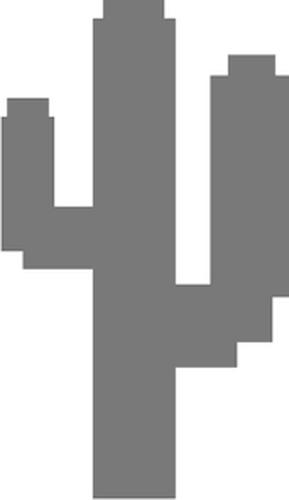

Ice Fishing

Sobre o jogo
Esse jogo foi criado para mais aprendizado sobre scores online utilizando como base o famoso jogo de corrida do dinossauro do Google Chrome. Ele é uma réplica com diversas melhorias do antigo jogo do Google Chrome, a maior mudança é um sistema de pontuação online, em que o player pode colocar seu recorde.
Personagens
| Imagem | Nome | Descrição |
|---|---|---|

|
Dino | Dino é o nosso pequeno dinossauro herbívoro. Ele acabou perdido no deserto, agora corre em busca de suas florestas para poder se alimentar com folhas verdinhas. |
|  | Cacto | Esse é o obstáculo de Dino, com seus espinhos afiados ele pode espetar e machucar nosso pequeno dinossauro. |